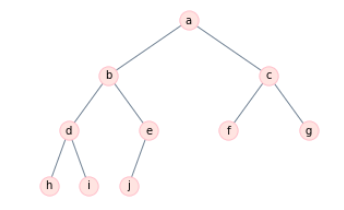

Arbres⚓︎


1. Terminologie⚓︎
1.1 Vocabulaire⚓︎
Un arbre est une structure hiérarchique de données, composée de nœuds. Si on adopte le vocabulaire des graphes, un arbre est un graphe non orienté, connexe, sans cycle, et dans lequel un nœud joue le rôle de racine.

-
Chaque nœud a exactement un seul nœud père, à l'exception du nœud racine qui est le seul nœud à ne pas avoir de père. (oui, la racine d'une arbre est en haut)

-
Chaque nœud peut avoir un nombre quelconque de fils, dont il est le père.
- Les nœuds qui n'ont pas de fils sont appelés les feuilles (ou nœuds externes).
- Les nœuds qui ne sont pas des feuilles sont des nœuds internes.
- Le nom de chaque nœud est appelé son étiquette.
Exemples : dans l'arbre ci-dessus,
- C est la racine, E, Z A et G sont les feuilles.
- K est le père de A et G.
- F est le père de Z.
- C est le père de B et K
- B est le père de E et F.
1.2 Exemples d'arbres⚓︎
1.2.1 La famille royale britannique (avant le 08 septembre 2022)⚓︎

Redessinez de manière plus schématique cet arbre. Pour quelle raison cet arbre a-t-il été modifié par rapport à sa version orginale (voir ici ), qui laissait apparaître les parents de chaque enfant ?
{kind=link}
1.2.2 Le DOM d'une page web⚓︎
DOM : Document Object Model

1.2.3 L'arborescence d'un disque dur⚓︎
Les systèmes Unix (MacOS ou GNU/Linux) organisent leur disque dur suivant l'arborescence ci-dessous :

1.3 Caractéristiques d'un arbre⚓︎
1.3.1 Outils numériques de description⚓︎

Définitions 
-
la taille d'un arbre est son nombre total de nœuds. Ici, elle vaut 8.
-
l'arité d'un nœud est son nombre de fils. Ici, l'arité de B vaut 2, celle de F vaut 1, celle de Z vaut 0.
-
la profondeur d'un nœud est le nombre de nœuds de son chemin le plus court vers la racine. Ici, la profondeur de G est 3 (G-K-C), la profondeur de B est 2 (B-C), la profondeur de Z est 4 (Z-F-B-C), la profondeur de C est 1.
-
la hauteur d'un arbre est la profondeur de son nœud le plus profond. Ici, la hauteur de l'arbre est 4.
Nous prendrons comme convention que :- si un arbre est réduit à un seul nœud-racine, sa hauteur sera 1.
- si un arbre est vide, sa hauteur est 0.
Cette convention est celle adoptée dans le sujet 0 publié le 15/12/2020. Attention, dans certains ouvrages, l'arbre vide a pour hauteur -1, et donc l'arbre réduit à un seul nœud a pour hauteur 0, donc notre arbre aurait avec cette convention une hauteur 3.
1.4 Arbres binaires⚓︎

Définition
Un arbre binaire est un arbre dont chaque nœud possède au plus deux fils.
L'arbre généalogique de la famille royale britannique n'est pas un arbre binaire.
L'arbre ci-dessous est lui un arbre binaire.

1.4.1 Sous-arbres d'un arbre binaire⚓︎
Chaque nœud d'un arbre binaire ne pouvant pas avoir plus de 2 fils, il est possible de séparer le «dessous» de chaque nœud en deux sous-arbres (éventuellement vides) : le sous-arbre gauche et le sous-arbre droit.

- Les deux sous-arbres représentés ici sont les sous-arbres du nœud-racine T.
- Le nœud O admet comme sous-arbre gauche le nœud H et comme sous-arbre droit le nœud N.
- Les feuilles P, H et N ont pour sous-arbre gauche et pour sous-arbre droit l'arbre vide.
Question : Dessiner tous les arbres binaires ayant respectivement 3 et 4 nœuds
Réponse
Il y a 5 arbres binaires possédant 3 noeuds.
Il y a 14 arbres binaires possédant 4 noeuds

Question : calculer le nombre de d’arbres binaires contenant 5 nœuds. Sachant qu’il y a
- 1 arbre binaire vide
- 1 arbre binaire contenant 1 nœud
- 2 arbres binaires contenant 2 nœuds
- 5 arbres binaires contenant 3 nœuds
- 14 arbres binaires contenant 4 nœuds
On ne cherchera pas à les construire tous, mais seulement à les dénombrer
Réponse
Pour les dénombrer, on considère le noeud à la racine puis on répartit les quatres noeuds restants entre le sous-arbre gauche et le sous-arbre droit. Par exemple, on peut mettre un noeud dans le sous-arbre gauche et 3 dans le sous-arbre droit. Au total, il y a 5 façons différentes de répartir les noeuds \((0+4, 1+3, 2+2, 3+1, 4+0)\). Pour chacune, on connaît le nombre de sous-arbres possibles, ce qui donne la somme :
1.4.3 Cas des arbres binaires complets⚓︎
On rencontre très souvent des arbres binaires dits complets parce qu'aucun des fils gauche ou droit n'est manquant.

Taille d'un arbre complet de hauteur \(h\) : \(1 + 2 + 2^2 + 2^3 + \dots + 2^{h-1} = 2^{h} - 1\)
preuve : ceci est la somme \(S\) des \(h\) premiers termes d'une suite géométrique de raison 2 et de premier terme 1, d'où \(S= \frac{1-2^{h}}{1-2} = 2^{h} -1\).
Un arbre complet de hauteur \(h\) (en prenant la convention que l'arbre vide a pour hauteur 0) a donc une taille égale à \(2^{h}-1\).
Remarque : On en déduit une inégalité classique sur l'encadrement de la taille \(t\) d'un arbre binaire (non nécessairement complet) de hauteur \(h\) :
2. Représentation d'un arbre⚓︎
2.1 Implémentation à partir de tuples imbriqués⚓︎
Arbre sous forme de tuples imbriqués
Un arbre peut se représenter par le tuple (valeur, sous-arbre gauche, sous-arbre droit).
L'arbre ci-dessous :
 est représenté par le tuple :
est représenté par le tuple :
>>> a = (2, (8, (6,(),()), (9,(),())), (1, (7, (),()), ()))
Le sous-arbre gauche est alors a[1] et le sous-arbre droit est a[2].
>>> a[1]
(8, (6, (), ()), (9, (), ()))
>>> a[2]
(1, (7, (), ()), ())
Exercice
Dessinez chacun des arbres ci-dessous. Donner pour chaque arbre, sa taille, sa hauteur et son nombre de feuilles. \(\Delta\) représente l'arbre vide. On rappelle que la hauteur d'un arbre est définie comme la profondeur maximale des noeuds de l'arbre.
1. \((1, \Delta, \Delta)\)
2. \((2, (4,\Delta,(1, (5, \Delta, (3, \Delta, (2, \Delta, \Delta))), \Delta)), \Delta)\)
3. \((3,(6, \Delta, (2,\Delta, \Delta)), (1,(5,\Delta, \Delta),(4,\Delta, \Delta)))\)
4. \((4, (3, (6, \Delta, \Delta), (1,\Delta, \Delta)),(5, (7,\Delta, \Delta),(2,\Delta, \Delta)))\)
 Taille : 1
Taille : 1
Hauteur : 1
Feuilles : 1
 Taille : 6
Taille : 6
Hauteur : 6
Feuilles : 1
 Taille : 6
Taille : 6
Hauteur : 3
Feuilles : 3
 Taille : 7
Taille : 7
Hauteur : 3
Feuilles : 4
Exercice
Écrire le tuple représentant l'arbre ci-dessous.
a = (T,(Y,(P,(),()),()),(O,(H,(),()),(N,(),())))
2.2 Implémentation à partir d'une «simple» liste⚓︎
De manière plus surprenante, il existe une méthode pour implémenter un arbre binaire (qui est une structure hiérarchique) avec une liste (qui est une structure linéaire). Ceci peut se faire par le biais d'une astuce sur les indices :
Les fils du nœud d'indice i sont placés aux indice 2i+1 et 2i+2.
Cette méthode est connue sous le nom de «méthode d'Eytzinger», et utilisée notamment en généalogie pour numéroter facilement les individus d'un arbre généalogique.
Exemple :

Pour comprendre facilement la numérotation, il suffit de s'imaginer l'arbre complet (en rajoutant les fils vides) et de faire une numérotation en largeur, niveau par niveau :

Exercice
- Représenter l'arbre défini par la liste
[5, 2, 6, 1, 4, A, 7]. - Quelle liste représente cet arbre ?


\([8,4,3,2,1,9,\Delta,7,5,\Delta, \Delta,6,4]\)
Exercice
Si on note Δ le sous-arbre vide, dessiner l'arbre représenté par la liste :
a = [3, 4, Δ, 7, 5]

Remarque : parfois (comme dans le sujet 0...) la racine de l'arbre est placée à l'indice 1. Dans ce cas, les fils du nœud d'indice i sont placés aux indice 2i et 2i+1.
3. Parcours d'arbres⚓︎
Les arbres étant une structure hiérarchique, leur utilisation implique la nécessité d'un parcours des valeurs stockées. Par exemple pour toutes les récupérer dans un certain ordre, ou bien pour en chercher une en particulier.
Il existe plusieurs manières de parcourir un arbre.
3.1 Parcours en largeur d'abord (BFS)⚓︎
BFS : Breadth First Search
Méthode du parcours en largeur (BFS)
Le parcours en largeur d'abord est un parcours étage par étage (de haut en bas) et de gauche à droite.

L'ordre des lettres parcourues est donc T-Y-O-P-H-N.
Les trois parcours que nous allons voir maintenant sont des parcours en profondeur d'abord, ou DFS (Depth First Search). Ce qui signifie qu'un des deux sous-arbres sera totalement parcouru avant que l'exploration du deuxième ne commence.
3.2 Parcours préfixe⚓︎
Le parcours préfixe est un parcours en profondeur d'abord.
Méthode du parcours préfixe
(parfois aussi appelé préordre)
- Chaque nœud est visité avant que ses fils le soient.
- On part de la racine, puis on visite son fils gauche (et éventuellement le fils gauche de celui-ci, etc.) avant de remonter et de redescendre vers le fils droit.

L'ordre des lettres parcourues est donc T-Y-P-O-H-N.
3.3 Parcours infixe⚓︎
Le parcours infixe est aussi un parcours en profondeur d'abord.
Méthode du parcours infixe
(parfois aussi appelé en ordre)
- Chaque nœud est visité après son fils gauche mais avant son fils droit.
- On part donc de la feuille la plus à gauche et on remonte par vagues sucessives. Un nœud ne peut pas être visité si son fils gauche ne l'a pas été.

L'ordre des lettres parcourues est donc P-Y-T-H-O-N.
3.4 Parcours postfixe⚓︎
Le parcours postfixe est aussi un parcours en profondeur d'abord.
Méthode du parcours postfixe
(parfois aussi appelé post-ordre ou encore suffixe)
- Chaque nœud est visité après ses fils le soient.
- On part donc de la feuille la plus à gauche, et on ne remonte à un nœud père que si ses fils ont tous été visités.

L'ordre des lettres parcourues est donc P-Y-H-N-O-T.
3.5 Comment ne pas se mélanger entre le pré / in / post fixe ?⚓︎
- pré veut dire avant
- in veut dire au milieu
- post veut dire après
Ces trois mots-clés parlent de la place du père par rapport à ses fils. Ensuite, il faut toujours se souvenir qu'on traite le fils gauche avant le fils droit.
- préfixe : le père doit être le premier par rapport à ses fils.
- infixe : le père doit être entre son fils gauche (traité en premier) et son fils droit.
- postfixe : le père ne doit être traité que quand ses deux fils (gauche d'abord, droite ensuite) l'ont été.
Un parcours préfixe commencera toujours par la racine, alors qu'un parcours postfixe finira toujours par la racine. Dans un parcours infixe, la racine sera «au milieu» (pas nécessairement parfaitement).
Exercice

Donner le rendu de chaque parcours :
- Parcours en largeur
- Parcours préfixe
- Parcours infixe
- Parcours postfixe
largeur : 1 2 3 4 5 6 7 8 9
préfixe : 1 2 4 5 7 8 3 6 9
infixe : 4 2 7 5 8 1 3 9 6
postfixe : 4 7 8 5 2 9 6 3 1
Exercice

Donner le rendu de chaque parcours :
- Parcours en largeur
- Parcours préfixe
- Parcours infixe
- Parcours postfixe
largeur : 9 8 7 6 2 5 1 4 3
préfixe : 9 8 6 2 1 7 5 4 3
infixe : 6 8 1 2 9 7 4 5 3
postfixe : 6 1 2 8 4 3 5 7 9
Exercice
Construire cinq arbres différents de taille 3, dont les noeuds contiennent les valeurs a, b, c pour lesquels le parcours infixe affiche à chaque fois a — b — c dans cet ordre.

Exercice
- Recopier et compléter l'arbre ci-dessous pour que son parcours suffixe affiche dans l'ordre les lettres INGENIEUR.
- Reprenez cet arbre et compléter l'arbre ci-dessous pour que son parcours préfixe affiche dans l'ordre les lettres EPERVIER.
- Reprenez cet arbre et compléter l'arbre ci-dessous pour que son parcours infixe affiche dans l'ordre les lettres GAUFFRE.


Exercice
On utilise des arbres pour représenter des expressions arithmétiques, par exemple pour programmer un solveur du jeu « le compte est bon ».
 Donner l'affichage produit par chacun des trois parcours en profondeur.
Donner l'affichage produit par chacun des trois parcours en profondeur.
Quel parcours renvoie un affichage de l'expression sous sa forme habituelle, en rajoutant si besoin des parenthèses ?
Les deux autres affichages correspondent à la notation polonaise et à la notation polonaise inversée. Ces notations permettent de représenter des expressions arithmétiques sans parenthèses.
parcours infixe : \(5 + 7 * 5 + 25 - 7 / 3\)
parcours préfixe : \(+ * 5 7 5 / - 25 7 3\) (notation polonaise)
parcours suffixe : $ 5 7 + 5 * 25 7 - 3 7$ (notation polonaise inversée)
4. Implémentations d'un arbre binaire⚓︎
En utilisant la Programmation Orientée Objet, Le but est d'obtenir l'interface ci-dessous.
Il est à remarquer que ce que nous allons appeler «Arbre» est en fait un nœud et ses deux fils gauche et droit.
Un arbre est composé d'un noeud et de deux sous-arbres. Un sous-arbre est un arbre composé d'un noeud et de deux sous-arbres ... Ce qui induit une approche récursive de cette structure.
interface souhaitée
>>> a = Arbre(4) # pour créer l'arbre dont le nœud a pour valeur 4,
# et dont les sous-arbres gauche et droit sont None
>>> a.gauche = Arbre(3) # pour donner la valeur 3 au nœud du sous-arbre gauche de a
>>> a.droit = Arbre(1) # pour donner la valeur 1 au nœud du sous-arbre droit de a
>>> a.droit.noeud # pour accéder à la valeur du fils droit de a
exercice
Dessinez l'arbre créé par les instructions suivantes :
>>> a = Arbre(4)
>>> a.gauche = Arbre(3)
>>> a.droit = Arbre(1)
>>> a.droit.gauche = Arbre(2)
>>> a.droit.droit = Arbre(7)
>>> a.gauche.gauche = Arbre(6)
>>> a.droit.droit.gauche = Arbre(9)

 Implémentation
Implémentation
⯈ Principe : nous allons créer une classe Arbre, qui contiendra 3 attributs :
noeud: la valeur du nœud (de typeInt)gauche: le sous-arbre gauche (de typeArbre)droit: le sous-arbre droit (de typeArbre).
Par défaut, les attributs gauche et droit seront à None, qui représentera l'arbre vide (ce qui n'est pas très rigoureux, car None n'est pas de type Arbre...).
⯈ Encapsulation ou pas ??? :
Afin de respecter le paradigme de la Programmation Orientée Objet, nous devrions jouer totalement le jeu de l'encapsulation en nous refusant d'accéder directement aux attributs.
Pour cela il faut construire des méthodes permettant d'accéder à ces attributs (avec des getters, ou accesseurs en français) ou de les modifier (avec des setters, ou mutateurs en français) .
4.1 Implémentation avec encapsulation⚓︎
Classe Arbre avec encapsulation
| üêç Script Python | |
|---|---|
1 2 3 4 5 6 7 8 9 10 11 12 13 14 15 16 17 18 19 20 | |
L'implémentation précédente permet d'utiliser les instructions de l'exercice précédent et de vérifier que l'arbre a bien été créé.
>>> a = Arbre(4)
>>> a.set_gauche(Arbre(3))
>>> a.set_droit(Arbre(1))
>>> a.get_droit().set_gauche(Arbre(2))
>>> a.get_droit().set_droit(Arbre(7))
>>> a.get_gauche().set_gauche(Arbre(6))
>>> a.get_droit().get_droit().set_gauche(Arbre(9))
>>> a
<__main__.Arbre at 0x7f0100361f40>
>>> a.get_droit().get_gauche().get_data()
2
4.2 Implémentation sans encapsulation⚓︎
Classe Arbre sans encapsulation
| üêç Script Python | |
|---|---|
1 2 3 4 5 | |
C'est déjà fini !
a = Arbre(4)
a.gauche = Arbre(3)
a.droit = Arbre(1)
a.droit.gauche = Arbre(2)
a.droit.droit = Arbre(7)
a.gauche.gauche = Arbre(6)
a.droit.droit.gauche = Arbre(9)
>>> a
<__main__.Arbre at 0x7f0100361f40>
>>> a.droit.gauche.data
2
On voit que l'implémentation avec accès direct aux attributs est beaucoup plus simple et rapide. Néanmoins, elle peut être considérée comme incorrecte dans certains langages qui obligent à passer par des accesseurs ou mutateurs pour lire ou modifier les attributs.
To Do
Créer votre classe Arbre avec un constructeur et implementer l'arbre ci dessous dans votre fichier de test testArbre

class ArbreB:
def __init__(self, valeur, gauche = None, droit = None):
self.noeud = valeur
self.gauche = gauche
self.droit = droit
def __repr__(self):
return str(self.noeud) +str(self.gauche).replace('None','.')+str(self.droit).replace('None','.')
from arbre import ArbreB
arbre_f = ArbreB('f')
arbre_g = ArbreB('g')
arbre_c = ArbreB('c',arbre_f,arbre_g)
arbre_j = ArbreB('j')
arbre_e = ArbreB('e',arbre_j)
arbre_h = ArbreB('h')
arbre_i = ArbreB('i')
arbre_d = ArbreB('d', arbre_h,arbre_i)
arbre_b = ArbreB('b', arbre_d, arbre_e)
arbre = ArbreB('a', arbre_b, arbre_c)
print(arbre)
>> abdh..i..ej...cf..g..
Outils de visualisation
Vous pouvez utiliser dans votre fichier de test l'outil de visualisation suivant.
Il permet d'afficher dans une fenêtre externe votre arbre.
N'oubliez pas d'installer les modules matplotlib et networkx si besoin.
# utilitaire pour représenter les arbres binaires
import networkx as nx
import matplotlib.pyplot as plt
def hauteur(arbre):
if arbre is None:
return 0
else:
return 1 + max(hauteur(arbre.gauche), hauteur(arbre.droit))
def parkour(arbre, noeuds, branches, position, profondeur, pos_courante):
if arbre is not None:
noeuds.append(arbre.noeud) # on complète la liste des noeuds
position[arbre.noeud] = (pos_courante,profondeur) # ... et la liste des positions
profondeur -= 1
if arbre.gauche is not None:
branches.append((arbre.noeud, arbre.gauche.noeud)) #... et la liste des branches
parkour(arbre.gauche, noeuds, branches, position, profondeur,
pos_courante - 2**(profondeur - 1))
if arbre.droit is not None:
branches.append((arbre.noeud, arbre.droit.noeud))
parkour(arbre.droit, noeuds, branches, position, profondeur,
pos_courante + 2**(profondeur - 1))
return noeuds, branches, position
def repr_graph(arbre):
noeuds = [] #liste des noeuds, racines et feuilles de l'arbre
branches =[] # liste des branches de l'arbre
profond = hauteur(arbre) #hauteur de l'arbre
pos_courante = 2**(profond - 1) # position de la racine (en abscisse)
position = {} # dictionnaire des positions des noeuds sur la figure
# appel d'une fonction récursive de parcours, ici prefixe mais ça n'a pas d'importance
# on récupère : la liste des noeuds, la liste des branches,
# le dictionnaire des positions des noeuds
noeuds, branche, position = parkour(arbre, noeuds, branches, position, profond, pos_courante)
#print(position)
mon_arbre = nx.Graph() # objet Graphe de la bibliothèque Networkxx
mon_arbre.add_nodes_from(noeuds)
mon_arbre.add_edges_from(branches)
#print(list(arbre.nodes))
#print(list(arbre.edges))
#Si vous voulez changer des couleurs, amusez-vous ci-dessous
#Plein de noms de couleurs là : http://www.letoileauxsecrets.fr/couleurs/couleurs-gris.html
options = {
"font_size": 12,
"node_size": 300,
"node_color": "white",
"edge_color" : "green",
"edgecolors": "blue",
"linewidths": 1,
"width": 2,
}
# plt.figure(figsize=(12,8)) # pour changer la taille de la figure
nx.draw_networkx(mon_arbre, pos = position, **options)
ax = plt.gca()
ax.margins(0.20)
plt.axis("off")
plt.show()
return(mon_arbre) #on renvoie l'objet graphe networkxx au cas où
########################################################################################################
arbredessin = repr_graph(arbre)
4.3 Représentation graphique en console⚓︎
La méthode affiche suivante (qui n'est pas à connaître) permet d'avoir un semblant de représentation graphique de l'arbre en console :
| üêç Script Python | |
|---|---|
1 2 3 4 5 6 7 8 9 10 11 12 13 | |
Exercice
Ajouter dans votre fichier de test, la création de cet arbre
qui donnera alors :
>>> print(a.affiche())
|_4
|_3
|_6
|_None
|_1
|_2
|_7
|_9
|_None
arbre2_9 = ArbreB(9)
arbre2_7 = ArbreB(7, arbre2_9)
arbre2_2 = ArbreB(2)
arbre2_1= ArbreB(1, arbre2_2, arbre2_7)
arbre2_6 = ArbreB(6)
arbre2_3= ArbreB(3, arbre2_6)
arbre2 = ArbreB(4, arbre2_3, arbre2_1)
5. Algorithme sur les arbres⚓︎
Dans toute la suite, sauf mention contraire, on utilisera l'implémentation en Programmation Orientée Objet, en version sans encapsulation (la plus simple). Nous allons créer des fonctions renvoyant les différents parcours d'un arbre, ou encore sa taille, sa hauteur, son nombre de feuilles... Toutes ses fonctions exploiteront la structure récursive d'un arbre.
Rappel de l'implémentation :
| üêç Script Python | |
|---|---|
1 2 3 4 5 | |
To Do
Coder les fonctions suivantes :
est_Vide(self):
""""retourne True si l'arbre est vide"""
estFeuille(self):
""""retourne True si l'arbre est une feuille"""
| üêç Script Python | |
|---|---|
1 2 3 4 5 6 7 8 | |
Dans un premier temps nous allons écrire ces parcours de manière récursive. Nous souhaitons afficher les sommets, donc nous utiliserons print. Et deux appels récursifs...
5.1 Parcours préfixe⚓︎
Parcours préfixe
fonction prefixe(arbre):
Si l'arbre est vide :
return None
afficher le noeud courant en chaine de caractère ou dans une liste
# appel récursif de chaque fils
Si l'arbre gauche n'est pas vide :
prefixe(arbre.gauche)
Si l'arbre droit n'est pas vide
prefixe(arbre.droit)
Exemple avec l'arbre
>> prefixe : ['a', 'b', 'd', 'h', 'i', 'e', 'j', 'c', 'f', 'g']
>> prefixe : [4, 3, 6, 1, 2, 7, 9]
To Do
Coder le parcours préfixe en utilisant le pseudo algo ci dessus et en respectant le paradigme récursif
def parcoursPrefixe(self):
# Condition d'arrêt
if self.noeud is None:
return []
# Appel récursif et retourne la réponse
# La valeur est insérée AVANT les appels
liste_gauche = []
liste_droite = []
if not self.gauche is None:
liste_gauche = self.gauche.parcoursPrefixe()
if not self.droit is None:
liste_droite = self.droit.parcoursPrefixe()
return [self.noeud] + liste_gauche + liste_droite
#autre solution
def parcoursPrefixe2(self):
"""parcours préfixe"""
if self.est_Vide():
return []
return [self.noeud] + self.gauche.parcoursPrefixe() + self.droit.parcoursPrefixe()
5.2 Parcours infixe⚓︎
Parcours Infixe
fonction infixe(arbre):
Si l'arbre est vide :
return None
# appel récursif de chaque fils
Si l'arbre gauche n'est pas vide :
prefixe(arbre.gauche)
afficher le noeud courant en chaine de caractère ou dans une liste
Si l'arbre droit n'est pas vide
prefixe(arbre.droit)
Exemple avec l'arbre
>> infixe : ['h', 'd', 'i', 'b', 'j', 'e', 'a', 'f', 'c', 'g']
>> infixe : [6, 3, 4, 2, 1, 9, 7]
To Do
Coder le parcours infixe en utilisant le pseudo algo ci dessus et en respectant le paradigme récursif
def parcoursInfixe(self):
# Condition d'arrêt
if self.noeud is None:
return []
# Appel récursif et retourne la réponse
# La valeur est insérée AVANT les appels
liste_gauche = []
liste_droite = []
if not self.gauche is None:
liste_gauche = self.gauche.parcoursInfixe()
if not self.droit is None:
liste_droite = self.droit.parcoursInfixe()
return [] + liste_gauche + [self.noeud] + liste_droite
5.3 Parcours postfixe⚓︎
Parcours suffixe
fonction suffixe(arbre):
Si l'arbre est vide :
return None
# appel récursif de chaque fils
Si l'arbre gauche n'est pas vide :
prefixe(arbre.gauche)
Si l'arbre droit n'est pas vide
prefixe(arbre.droit)
afficher le noeud courant en chaine de caractère ou dans une liste
Exemple avec l'arbre
>> suffixe : ['h', 'i', 'd', 'j', 'e', 'b', 'f', 'g', 'c', 'a']
>> suffixe : [6, 3, 2, 9, 7, 1, 4]
To Do
Coder le parcours suffixe en utilisant le pseudo algo ci dessus et en respectant le paradigme récursif
def parcoursSuffixe(self):
# Condition d'arrêt
if self.noeud is None:
return []
# Appel récursif et retourne la réponse
# La valeur est insérée AVANT les appels
liste_gauche = []
liste_droite = []
if not self.gauche is None:
liste_gauche = self.gauche.parcoursSuffixe()
if not self.droit is None:
liste_droite = self.droit.parcoursSuffixe()
return [] + liste_gauche + liste_droite + [self.noeud]
Pause vidéo
- Regardez et appréciez cette vidéo
- À l'aide de la vidéo, codez le parcours infixe en itératif.
| üêç Script Python | |
|---|---|
1 2 3 4 5 6 7 8 9 10 11 12 13 14 15 16 | |
5.4 Calcul de la taille d'un arbre⚓︎
Rappel : la taille d un arbre est le nombre de ses nœuds.
Taille d'un arbre
fonction taille(arbre):
Si l arbre est vide:
on renvoie 0
on renvoie 1 + taille(arbre gauche) + taille(arbre droit)
To Do
Coder la taille d'un arbre en utilisant le pseudo algo ci dessus et en respectant le paradigme récursif
def taille(self):
"""retourne la taille de l'arbre"""
# condition d'arrêt
if self.est_Vide():
return 0
# Appel récursif
# if self.estFeuille() :
# return 1
taille_gauche = 0
taille_droite = 0
if not self.gauche is None:
taille_gauche = self.gauche.taille()
if not self.droit is None :
taille_droite = self.droit.taille()
return 1 + taille_gauche + taille_droite
def taille2(self):
if self.est_Vide():
return 0
return 1 + self.gauche.taille() + self.droit.taille()
Exemple avec l'arbre
>> 10
>> 7
5.5 Calcul de la hauteur d'un arbre⚓︎
Rappel : on prendra comme convention que l'arbre vide a pour hauteur 0.
Hauteur d'un arbre
fonction hauteur(arbre):
Si l arbre est vide
on renvoie 0
Sinon
on renvoie 1 + le max entre la hauteur de l'arbre gauche et celle de l arbre droit
To Do
Coder la hauteur d'un arbre en utilisant le pseudo algo ci dessus et en respectant le paradigme récursif
def hauteur(self):
"""retourne la hauteur de l'arbre"""
hauteur_gauche = 0
hauteur_droite = 0
if self.est_Vide():
return 0
if not self.gauche is None:
hauteur_gauche = self.gauche.hauteur()
if not self.droit is None :
hauteur_droite = self.droit.hauteur()
return 1 + max( hauteur_gauche, hauteur_droite)
Exemple avec l'arbre
>> 4
>> 4
5.6 Calcul du nombre de feuilles d'un arbre⚓︎
Rappel : une feuille est un nœud d'arité 0, autrement dit sans fils gauche ni fils droit.
To Do
Coder le nombre feuille d'un arbre en respectant le paradigme récursif
def nb_feuilles2(self):
if self is None:
return 0
if (self.gauche is None) and (self.droit is None):
return 1
return self.gauche.nb_feuilles() + self.droit.nb_feuilles()
#Autre version
def nb_feuilles(self):
"""retourne le nombre de feuilles de l'arbre"""
if self.est_Vide():
return 0
if self.estFeuille():
return 1
nb_feuilles_gauche = 0
nb_feuilles_droite = 0
if not self.gauche is None:
nb_feuilles_gauche = self.gauche.nb_feuilles()
if not self.droit is None:
nb_feuilles_droite = self.droit.nb_feuilles()
return nb_feuilles_gauche + nb_feuilles_droite
5.7 Recherche d'une valeur dans un arbre⚓︎
To Do
Coder la recherche d'une valeur dans un arbre en respectant le paradigme récursif
def recherche(self, valeur):
"""retourne True si la valeur est dans l'arbre et False sinon"""
def recherche(self, valeur):
if self is None:
return False
if self.noeud == valeur:
return True
TrouveGauche = False
TrouveDroit = False
if not self.gauche is None:
TrouveGauche = self.gauche.recherche(valeur)
if not self.droit is None:
TrouveDroit = self.droit.recherche(valeur)
return TrouveGauche or TrouveDroit
assert arbre.recherche('a') == True
assert arbre.recherche('z') == False #cas d'une valeur non présente
assert arbre.recherche('h') == True #cas ou la valeur rechérchée est une feuille à gauche
assert arbre.recherche('g') == True #cas ou la valeur rechérchée est une feuille à droite
5.8 Parcours en largeur⚓︎
Le parcours en largeur (BFS) est le plus simple à faire visuellement : mais il est plus difficile à coder que les parcours préfixe, infixe, postfixe.
Il est nécessaire d'utiliser une file :
- On place l'arbre dans la file.
- Tant que la file n'est pas vide, on procède comme suit :
- On défile, donc on récupère l'arbre situé en haut de la file.
- Si cet arbre n'est pas vide :
- On garde son étiquette.
- On enfile son sous-arbre gauche, puis son sous-arbre droit.

On importera l'objet File() d'une classe File créé précédemment, qui permet de :
- créer une file vide avec
f=File() - défiler un élément par
a=f.defile() - enfiler l'élément
aparf.enfile(a) - savoir si la file est vide par le booléen
f.estFileVide()
Parcours en largeur (BFS)
from File import File
def parcoursLargeur(self):
"""parcours en largeur
@param: l'arbre à parcourir
@return: la liste des noeuds dans l'ordre en largeur
"""
#Initialisation d'une file vide pour stocker les éléments à traiter
f=File()
#Mettre le noeud source
f.enfile(self)
#Liste des sommets pour restituer le parcours en largeur
l=[]
#Tant quee la file n'est pas vide
while not f.estFileVide():
# on dépile le noeud du début de la file pour le traiter
a=f.defile()
l.append(a.noeud)
if not a.gauche is None:
#f.insert(0,a.gauche)
f.enfile(a.gauche)
if not a.droit is None:
#f.insert(0,a.droit)
f.enfile(a.droit)
return l
assert arbre.parcoursLargeur() == ['a', 'b', 'c', 'd', 'e', 'f', 'g', 'h', 'i', 'j']
assert arbre2.parcoursLargeur() == [4, 3, 1, 6, 2, 7, 9]
Téléchargement
lien vers les fichiers complets de la classe Arbre et de son fichier de test
lien de téléchargement
Bibliographie⚓︎
- En majeur partie sur la trame du cours de Gilles Lassus – Enseignant NSI
 Lycée François Mauriac -- Bordeaux
Lycée François Mauriac -- Bordeaux - Cours de Frédéric Mandon
- NSI 24 Leçons avec exercices corrigés – Edition Ellipses
- Prépabac NSI, Terminale, G.CONNAN, V.PETROV, G.ROZSAVOLGYI, L.SIGNAC, éditions HATIER.
- Numérique et Sciences Informatiques, Terminale, T. BALABONSKI, S. CONCHON, J.-C. FILLIATRE, K. NGUYEN, éditions ELLIPSES.